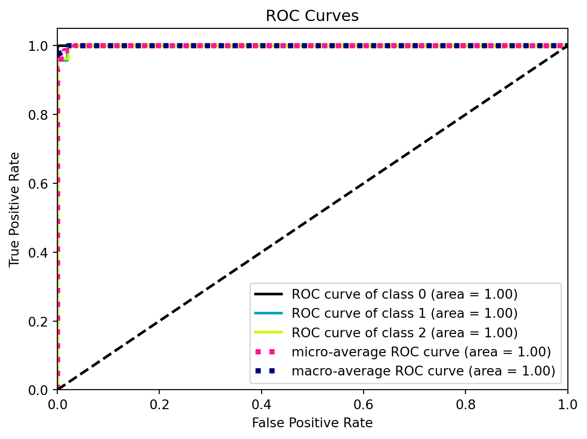

Classification is supervised learning algorithm, where the model learns from a training dataset that has paired input data with their correct output labels. They are many types of clustering methods, let’s take a look at some examples:
K-Nearest Neighbours (kNN): calculate the distance of one data point from every other data point and then takes a majority vote from k-nearest neighbors of each data points to classify the output.
Decision trees: use multiple if-else statements in the form of a tree structure that includes nodes and leaves. The nodes breaking down the one major structure into smaller structures and eventually providing the final outcome.
Random Forest: uses multiple decision trees to predict the outcome of the target variable. Each decision tree provides its own outcome and then it takes the majority vote to classify the final outcome.
Support Vector Machines: it creates an n-dimensional space for the n number of features in the dataset and then tries to create the hyperplanes such that it divides and classifies the data points with the maximum margin possible.
💜 Multinomial Regression
Logistic regression is used for classification of binary variables. Multinomial Regression also known as softmax function, is an extension of Logistic Regression (sigmoid function) to a higher number of classes.
The simplest approach to multinomial data is to nominate one of the response categories as a baseline or reference cell, calculate log-odds for all other categories relative to the baseline, and then let the log-odds be a linear function of the predictors.
We can do simultaneously estimation on multiple binary logit models with two given classes: \(ln\left(\frac{\pi_{ij}}{\pi_{ib}}\right) = ln\left(\frac{P(y_i=j|x)}{P(y_i=b|x)}\right)=x_i \beta_j\)
When j = b, the left side of the equation becomes \(ln(1)=0\), and \(\beta_b=0\), the class b would have log-odds of 0 compare with itself. Typically, we pick the last category as a baseline and calculate the odds that a member of group i falls in category j as opposed to the baseline.
Let’s use it on a simple example, knowing the sepal and petal’s length and width, will the softmax model predict the iris species?
iris images
First, we take a look at the dataset
Code
import pandas as pdfrom sklearn import datasetsfrom sklearn.linear_model import LogisticRegressionfrom sklearn.model_selection import train_test_splitfrom sklearn.metrics import accuracy_score, confusion_matrix,classification_reportimport matplotlib.pyplot as pltimport seaborn as sns# Load the iris datasetiris = datasets.load_iris()X = iris.datay = iris.target iris_df = pd.DataFrame(iris.data,columns=iris.feature_names)iris_df['target']=iris.targetiris_df.head(5)
Train the model and make predictions, our model gets 👀
A very good performance ~
Code
# Split the dataset into training and test setsX_train, X_test, y_train, y_test = train_test_split(X, y, test_size=0.5, random_state=1)model = LogisticRegression(multi_class='multinomial', solver='lbfgs', max_iter=100)# Train the modelmodel.fit(X_train, y_train)# Make predictionsy_pred = model.predict(X_test)# Evaluate the modelaccuracy = accuracy_score(y_test, y_pred)print("Accuracy:", accuracy)
Accuracy: 0.9733333333333334
Confusion matrix provides a visual and numerical representation of the model’s performance, showing how many instances of each actual class were predicted as each predicted class. It’s useful for identifying any particular classes that the model might be confusing with others.
Plotting the confusion matrix to see where the model got wrong
ROC curve (receiver operating characteristic curve) plots TPR vs. FPR at different classification thresholds.
AUC (Area under the ROC Curve) provides a single measure of overall performance of a classification model from 0 to 1.
Code
from sklearn.metrics import roc_curve, aucimport scikitplot as skplt# Plot ROC curve and AUC for each classskplt.metrics.plot_roc(y_test, y_probas)plt.show()

Area = 1, as ROC can be overly optimistic, shows it’s a perfect classifier even some other metrics don’t agree
---title: "Classification"---## :blue_heart: What is classification?Classification is <spanstyle="color: red;">supervised </span> learning algorithm, where the model learns from a training dataset that has paired input data with their correct output labels. They are many types of clustering methods, let's take a look at some examples: * **K-Nearest Neighbours (kNN)**: calculate the distance of one data point from every other data point and then takes a majority vote from k-nearest neighbors of each data points to classify the output.* **Decision trees**: use multiple if-else statements in the form of a tree structure that includes nodes and leaves. The nodes breaking down the one major structure into smaller structures and eventually providing the final outcome.* **Random Forest**: uses multiple decision trees to predict the outcome of the target variable. Each decision tree provides its own outcome and then it takes the majority vote to classify the final outcome.* **Support Vector Machines**: it creates an n-dimensional space for the n number of features in the dataset and then tries to create the hyperplanes such that it divides and classifies the data points with the maximum margin possible. ## :purple_heart: Multinomial RegressionLogistic regression is used for classification of binary variables. Multinomial Regression also known as softmax function, is an extension of Logistic Regression (sigmoid function) to a higher number of classes. The simplest approach to multinomial data is to nominate one of the response categories as a baseline or reference cell, calculate log-odds for all other categories relative to the baseline, and then let the log-odds be a linear function of the predictors.We can do simultaneously estimation on multiple binary logit models with two given classes: $ln\left(\frac{\pi_{ij}}{\pi_{ib}}\right) = ln\left(\frac{P(y_i=j|x)}{P(y_i=b|x)}\right)=x_i \beta_j$When j = b, the left side of the equation becomes $ln(1)=0$, and $\beta_b=0$, the class b would have log-odds of 0 compare with itself. Typically, we pick the last category as a baseline and calculate the odds that a member of group i falls in category j as opposed to the baseline.Let's use it on a simple example, knowing the sepal and petal's length and width, will the softmax model predict the iris species? First, we take a look at the dataset```{python}import pandas as pdfrom sklearn import datasetsfrom sklearn.linear_model import LogisticRegressionfrom sklearn.model_selection import train_test_splitfrom sklearn.metrics import accuracy_score, confusion_matrix,classification_reportimport matplotlib.pyplot as pltimport seaborn as sns# Load the iris datasetiris = datasets.load_iris()X = iris.datay = iris.target iris_df = pd.DataFrame(iris.data,columns=iris.feature_names)iris_df['target']=iris.targetiris_df.head(5)```We can see some differences between iris classes```{python}sns.pairplot(iris_df, hue='target', height=1.5, aspect=1)```\ \Train the model and make predictions, our model gets :eyes:A very good performance ~```{python}# Split the dataset into training and test setsX_train, X_test, y_train, y_test = train_test_split(X, y, test_size=0.5, random_state=1)model = LogisticRegression(multi_class='multinomial', solver='lbfgs', max_iter=100)# Train the modelmodel.fit(X_train, y_train)# Make predictionsy_pred = model.predict(X_test)# Evaluate the modelaccuracy = accuracy_score(y_test, y_pred)print("Accuracy:", accuracy)```**Confusion matrix** provides a visual and numerical representation of the model's performance, showing how many instances of each actual class were predicted as each predicted class. It's useful for identifying any particular classes that the model might be confusing with others.Plotting the confusion matrix to see where the model got wrong```{python}cm = confusion_matrix(y_test, y_pred)plt.figure(figsize=(8, 6))sns.heatmap(cm, annot=True, fmt="d", cmap='Purples', xticklabels=iris.target_names, yticklabels=iris.target_names)plt.ylabel('Actual')plt.xlabel('Predicted')plt.title('Confusion Matrix')plt.show()``````{python}#| echo: false#| eval: false#| # Compute the probabilitiesy_probas = model.predict_proba(X_test)# Creating a DataFrame for the test dataset with probabilitiestest_df = pd.DataFrame(X_test, columns=iris.feature_names)test_df['Prob_Setosa'] = y_probas[:, 0]test_df['Prob_Versicolour'] = y_probas[:, 1]test_df['Prob_Virginica'] = y_probas[:, 2]# Plotting the probabilities against Sepal Lengthplt.figure(figsize=(10, 6))plt.scatter(test_df['sepal length (cm)'], test_df['Prob_Setosa'], label='Setosa', color='red')plt.scatter(test_df['sepal length (cm)'], test_df['Prob_Versicolour'], label='Versicolour', color='orange')plt.scatter(test_df['sepal length (cm)'], test_df['Prob_Virginica'], label='Virginica', color='blue')plt.title('Probabilities of Species')plt.xlabel('Sepal Length (cm)')plt.ylabel('Probability')plt.legend()plt.grid(True)plt.show()```Finally, we can kinda see the softmax curve of three species through a 3D plot```{python}import plotly.graph_objects as go# Compute the probabilitiesy_probas = model.predict_proba(X_test)# Creating a DataFrame for the test dataset with probabilitiestest_df = pd.DataFrame(X_test, columns=iris.feature_names)test_df['Prob_Setosa'] = y_probas[:, 0]test_df['Prob_Versicolour'] = y_probas[:, 1]test_df['Prob_Virginica'] = y_probas[:, 2]fig = go.Figure()for feat in ['Setosa', 'Versicolour', 'Virginica']: fig.add_trace(go.Scatter3d(x=test_df['sepal length (cm)'], y=test_df['sepal width (cm)'], z=test_df[f'Prob_{feat}'], mode='markers', name=feat))fig.update_traces(marker=dict(size=3))fig.update_layout( title={'text': "Probabilities of Species",'y':0.9,'x':0.5,'xanchor': 'center','yanchor': 'top'})fig.show()```## Classification evaluation metricsFirst thing came to mind is our old friend: accuracy* **Accuracy** = $\frac{TP + TN}{TP + TN + FP + FN}$Wait a second, what are all these, isn't it just corrects over all?It is! Just with different concepts which are very important for the following metrics* **True Positives (TP)**: The model correctly predicted the positive class.* **True Negatives (TN)**: The model correctly predicted the negative class.* **False Positives (FP)**: The model incorrectly predicted the positive class (also known as "Type I error").* **False Negatives (FN)**: The model incorrectly predicted the negative class (also known as "Type II error"). Wow, so many names!* **Precision** = $\frac{TP}{TP + FP}$ * **Recall** = $\frac{TP}{TP + FN}$ (True Positive Rate (TPR), Sensitivity or Recall)* **F1 Score** = $2 \times \frac{\text{Precision} \times \text{Recall}}{\text{Precision} + \text{Recall}}$* **Macro F1 Score** = $\frac{1}{N} \sum_{i=1}^{N} F1_i$ (treat all classes equally when the dataset is imbalanced)* **Micro F1 Score** = $2 \times \frac{\text{Total TP}}{\text{Total TP} + \text{Total FP} + \text{Total FN}}$ (weigh each instance equally when the dataset is imbalanced)* **Specificity** = $\frac{TN}{TN + FP}$* **False Positive Rate (FPR)** = $\frac{FP}{TN + FP}$* **ROC curve (receiver operating characteristic curve)** plots TPR vs. FPR at different classification thresholds.* **AUC (Area under the ROC Curve)** provides a single measure of overall performance of a classification model from 0 to 1. ```{python}from sklearn.metrics import roc_curve, aucimport scikitplot as skplt# Plot ROC curve and AUC for each classskplt.metrics.plot_roc(y_test, y_probas)plt.show()```Area = 1, as ROC can be overly optimistic, shows it's a perfect classifier even some other metrics don't agree```{python}print(classification_report(y_test, y_pred))``````{python}#| echo: false#| eval: falseimport numpy as npfrom sklearn.preprocessing import label_binarizefrom sklearn.preprocessing import label_binarizefrom sklearn.metrics import roc_curve, aucfrom sklearn.multiclass import OneVsRestClassifierimport scikitplot as skplt# Load the wine datasetwine = datasets.load_digits()X = wine.datay = wine.targetX_train, X_test, y_train, y_test = train_test_split(X, y, test_size=0.5, random_state=2)model = LogisticRegression(multi_class='multinomial', solver='lbfgs', max_iter=1000)# Train the modelmodel.fit(X_train, y_train)# Compute the probabilitiesy_probas = model.predict_proba(X_test)# Make predictionsy_pred = model.predict(X_test)# Evaluate the modelaccuracy = accuracy_score(y_test, y_pred)print("Accuracy:", accuracy)# Plot ROC curve and AUC for each classskplt.metrics.plot_roc(y_test, y_probas)plt.show()```### Ref[Intro-1](https://www.mlstack.cafe/blog/classification-interview-questions)[ploty](https://plotly.com/python/figure-labels/)[roc](https://developers.google.com/machine-learning/crash-course/classification/roc-and-auc)